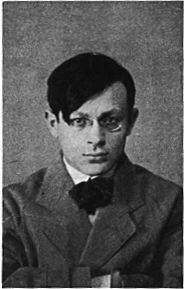

Nasce a Moinesti in Romania il 14 aprile 1896. Tristan Tzara è lo pseudonimo di Samuel Rosenstock. A Bucarest nei primi anni dieci, fonda, giovanissimo, una rivista di poesie che si richiama all'esempio delle riviste simboliste. La passione per i poeti francesi, segna infatti la sua formazione, portandolo a occuparsi di letteratura e a cimentarsi nella scrittura di versi e poemi in prosa.
Allo scoppio dellla prima guerra mondiale si trasferisce a Zurigo per studiare filosofia. Nel febbraio del 1916 è tra i fondatori del "Cabaret Voltaire" e da lui il dadaismo riceve il maggior impulso. Pubblica riviste, scrive poesie e poemi nei quali porta avanti il suo progetto di destabilizzazione linguistica e di azzeramento artistico.
Alla fine del 1919, dopo aver dato vita alla rivista "Dada", pone fine alla fase zurighese del movimento e si sposta a Parigi. Là è atteso da un gruppo di giovani poeti francesi capeggiati da Breton e Soupault che pubblicano da poco una nuova rivista d'avanguardia, "Litterature", immediatamente condizionata dalla trascinante personalità di Tzara.
Intraprendente organizzatore, muove i fili della scena dadaista per diverso tempo tenendo contatti e promuovendo incontri e manifestazioni fino alla crisi del 1922; dopo la rottura con Breton e Picabia si allontana dal surrealismo sia per ragioni politiche che per ragioni metodologiche.
Si accosta al marxismo e durante la guerra di Spagna esprime una posizione nettamente antifascista. In seguito si dedica allo studio e alle ricerche filologiche.
Fra le sue opere, oltre ai manifesti dadaisti, sono da ricordare almeno: "La prima avventura celeste del signor Anti pyrine" (1916), "25 poesie" (1918), "L'uomo approssimativo" e "La carta incollata o il proverbio dipinto" (1930).
Proseguì la produzione letteraria anche nel secondo dopoguerra con opere che, in forme più composte, rivelano i suoi nuovi orientamenti ideologici e il suo impegno morale e civile, come ad esempio "La fuga" del 1947. Morì a Parigi nel 1963.